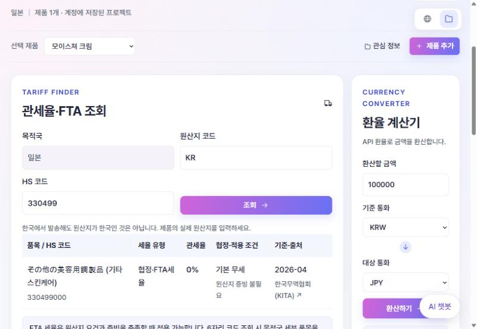
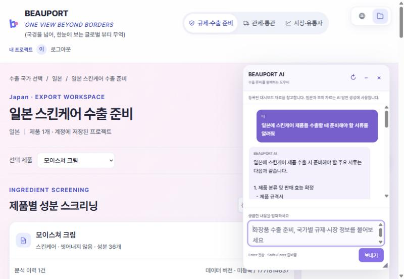
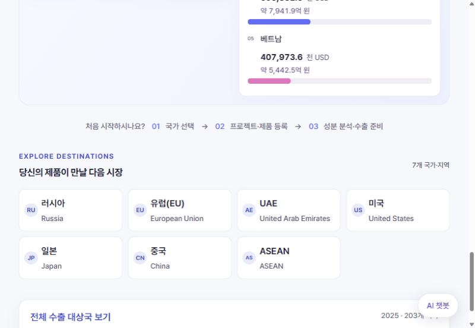
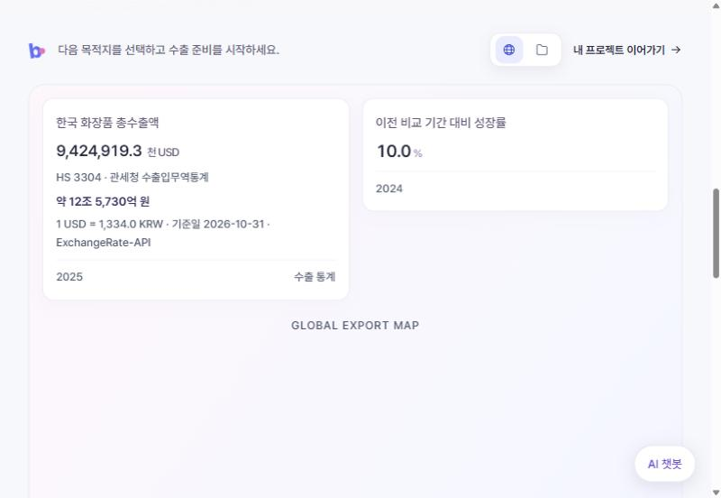
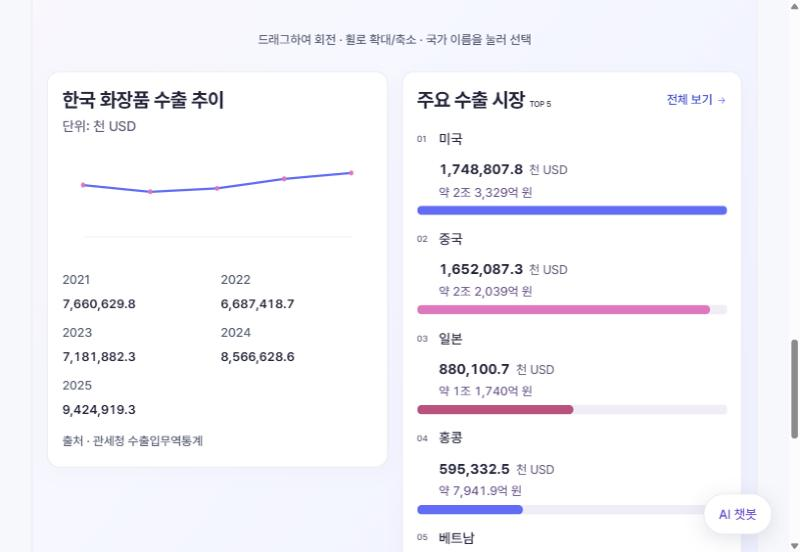
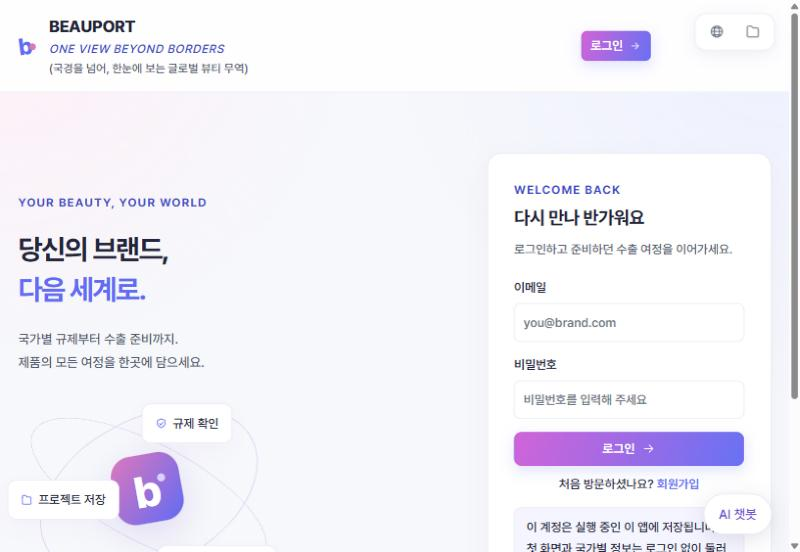
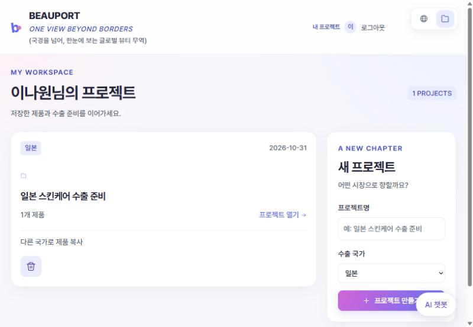
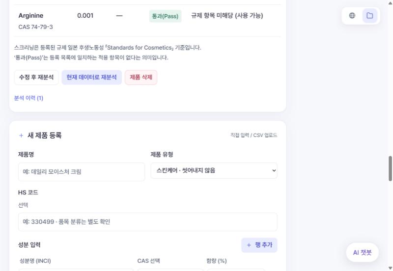
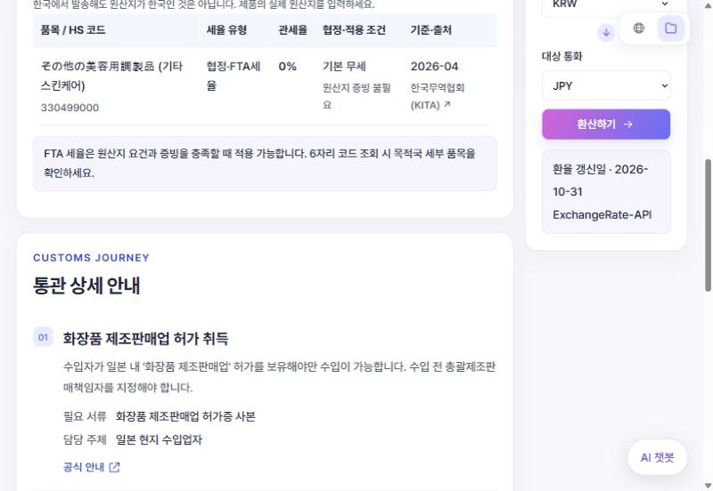
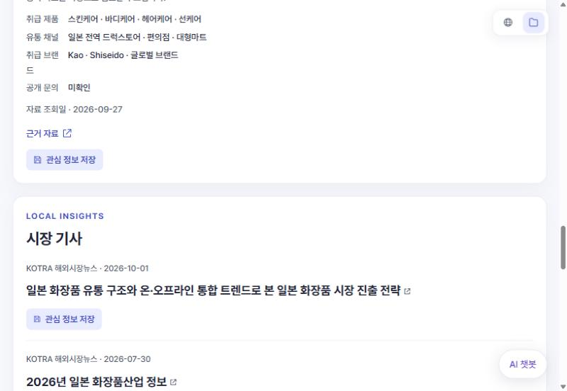

BEAUPORT
K-뷰티 수출 준비 통합 대시보드
"국경을 넘어, 한눈에" — ONE VIEW BEYOND BORDERS
화장품을 해외로 수출하려는 중소기업이 국가별 성분 규제 · 수출 준비 서류 · 관세 · 통관 · 시장 · 유통사 정보를 한곳에서 확인하고, 제품 단위로 저장해 관리하는 Flask 기반 웹 대시보드입니다.




시연 영상
첫 화면과 국가별 정보는 로그인 없이 볼 수 있고, 프로젝트 저장 · 성분 분석 · AI 챗봇은 회원가입 후 사용할 수 있습니다. 무료 서버라 첫 접속에 최대 1분 정도 걸릴 수 있습니다.
- 대시보드beauty-dashboard-fjxq.onrender.com ↗
- GitHubkijoojootopia/beauty_dashboard ↗
- 데일리 스크럼 (Notion)kitadm.notion.site ↗
한눈에 보는 핵심
한 번에
스크리닝
제품 성분을 입력하면 규제 · 수출 준비 · 관세 · 통관 · 시장 정보를 연결. CSV 열 자동 인식 → 국가별 규제 JSON과 CAS 번호 · 성분명 대조 → 판정 + 근거 원문
시장 선택
지원
주요 권역을 포함한 203개국 무역 · 규제 인프라 탐색. 관세청 · UN Comtrade · KOTRA · 환율 API + 팀이 직접 구축한 국가별 JSON
실무 데이터로
축적
일회성 검색이 아니라 국가 · 제품별 프로젝트 단위로 저장. 분석 이력 · 서류 체크 · 메모 · 관심 정보 저장, 엑셀 · JSON 내보내기
추측하지 않는
데이터
AI가 규제를 추측하지 않고, 원문에 없는 값은 비워 둠. "검출되지 않음 ≠ 법적 적합", 확정할 수 없는 조건은 확인 필요로 안내
숫자로 보는 결과
- 성분 규제 데이터7개 권역별 금지 · 제한 성분 JSON (EU · 미국 · 일본 · 중국 · 러시아/EAEU · UAE · ASEAN)
- 외부 API관세청(2종) · UN Comtrade · KOTRA 해외시장뉴스 · ExchangeRate-API · OpenAI
- 시장 통계KCII 국가별 수출현황 2021~2026 표준화
왜 만들었나
좋은 제품이 있어도, 해외 진출 정보는 흩어져 있다.

- 01한 번에 스크리닝제품 성분을 입력하면 규제 · 관세 · 통관 · 시장 정보를 연결합니다.
- 02시장 선택 지원주요 권역을 포함한 203개국 무역 · 규제 인프라를 탐색합니다.
- 03실무 데이터로 축적제품 · 국가별 프로젝트를 저장하고 CSV 등으로 내보냅니다.
- 성분 분석
- 수출 절차
- 시장 탐색
문제
타깃 고객은 우수한 화장품을 갖고 있지만 해외 수출 절차가 막막한 중소 화장품 기업입니다. 국가마다 금지 · 제한 성분과 허용 한도가 제각각이고, 관세 · 통관 서류와 절차를 국가별로 따로 조사해야 하며, 현지 시장 동향과 유통사 정보까지 별도로 탐색해야 합니다. 결과적으로 같은 조사를 반복하느라 시간과 비용이 크게 듭니다.
해결 — 수출 준비를 한곳에서
- 국가 선택
- 프로젝트 · 제품 등록
- 성분 분석
- 수출 준비 로드맵
- 관세 · 통관
- 시장 · 유통사
- 원스톱 스크리닝화장품의 성분만 입력하면 대상 국가의 성분 규제, 통관 절차, 시장 동향을 한 번에 제공
- 넓은 커버리지7개 목적지(ASEAN은 실제 회원국 10개 선택)와 203개국 무역 통계
- 프로젝트 단위 관리수출 국가 × 제품 단위로 저장하고, 실무 보고서나 팀 공유에 바로 쓸 수 있게 내보내기
팀과 역할
이나원의 담당 부분은 내가 한 일 페이지에서 자세히 설명합니다.
| 이름 | 역할 | 담당 |
|---|---|---|
| 장희주 | Project Manager · Platform Integration | Flask 통합 · 대시보드 UI · API 연동 · 발표 총괄 |
| 권해원 | Regulatory Compliance · Data | 권역별 규제 DB · 성분 스크리닝 · 규제 공지/로드맵 |
| 이나원 | UI/UX · Market Intelligence | 대시보드 설계 · 일본/러시아 DB · 시장 데이터 분석 |
| 황준영 | Trade · AI Automation | 관세/통관 · 미국/UAE 규제 · 챗봇 · 시연 영상 |
- PM · PLATFORM INTEGRATION장희주Flask 라우팅 · 공통 코어(platform_core) 통합, 계정 · 프로젝트 영속 저장(Render PostgreSQL), Tab 3 시장 기사 API 연동, Git 저장소 관리, 최종 발표
- REGULATORY COMPLIANCE · DATA권해원EU · 중국 · ASEAN 성분 규제 DB, Tab 1 성분 스크리닝 판정 로직, 수출 로드맵 · 규제 공지, 제품별 분석 이력 저장
- UI/UX · MARKET INTELLIGENCE이나원대시보드 레이아웃 설계와 UI/UX 디자인, 러시아 · 일본 규제 DB 구축, KCII 기반 Tab 3 시장 분석과 유통사 후보 연동, Chart.js 시각화, 발표 자료 제작
- TRADE · AI AUTOMATION황준영미국(FDA/MoCRA) · UAE 성분 규제 데이터, Tab 2 관세율 · 통관 로드맵 · 환율 연동, AI 챗봇, 시연 영상
기술 스택과 구조
모듈마다 계산은 services/, 요청 처리는 routes.py, 외부 연결은 integrations/에 두었습니다.
- Python 3.10+
- Flask (앱 팩토리 + Blueprint)
- SQLite · Render PostgreSQL
- Jinja2 · CSS · JavaScript
- Chart.js
- Pretendard Variable
- JSON · CSV 데이터
- OpenAI gpt-4.1-mini
- pytest
- Render 배포
모듈 구조 — 4개의 독립 작업 구역
공통 코어
platform_core/ — 공통 Flask 앱 · 계정 · DB · 프로젝트 · 제품 · 메모 저장, 공통 화면 · 지도
Tab 1 · 규제
tab1_regulation/ — 성분 CSV 입력 · 판정, 국가 규제 자료, 규제 공지 · 수출 준비 로드맵
Tab 2 · 관세
tab2_customs/ — 관세 · 통관 자료, 환율 연동 · 계산
Tab 3 · 시장
tab3_market/ — 수출 · 시장 통계, Comtrade · KOTRA · OpenAI 연동, 유통사 · 기사
AI 챗봇
ai_chatbot/ — 등록된 대시보드 자료를 참고하는 AI 도우미
다른 모듈의 DB나 파일에 직접 쓰지 않고, 공통으로 정한 연결 계약(integration contract)으로만 데이터를 주고받습니다.
기술 스택 표 · 폴더 구조 보기
| 영역 | 사용 기술 |
|---|---|
| 서버 | Python (3.10 이상) · Flask (앱 팩토리 + 모듈별 Blueprint) |
| 저장 | SQLite (로컬) · Render PostgreSQL (배포 — 계정 · 프로젝트 영속 저장) |
| 계정 · 보안 | 회원가입 · 로그인, 비밀번호 해시, CSRF, 프로젝트 소유권 검사, API 키는 .env로 분리 |
| 화면 | Jinja2 템플릿 · CSS · JavaScript (프런트 빌드 도구 없음) · Chart.js · Pretendard Variable |
| 데이터 | 국가별 JSON (규제 · 로드맵 · 관세 · 통관 · 유통사 · 기사) + CSV (KCII 수출 통계 · 러시아 규제 원문 대조) |
| 외부 API | 관세청 수출입무역통계 · UN Comtrade · KOTRA 해외시장뉴스 · ExchangeRate-API · OpenAI (gpt-4.1-mini) |
| 테스트 | pytest — 합성 테스트 데이터와 임시 DB 사용 (실제 규제 · 처방 데이터를 쓰지 않음) |
| 배포 | Render |
beauty_dashboard/
├── app.py # 실행 진입점 (create_app + 챗봇 등록)
├── AI_RULES.md / AGENTS.md
├── platform_core/ # 공통 코어
├── tab1_regulation/
│ ├── routes.py · import_japan.py
│ ├── services/ · integrations/
│ └── data/{eac, eu, uae, us, jp, cn, asean}/
├── tab2_customs/ # 같은 모듈 구조
├── tab3_market/ # 같은 모듈 구조, data/export/ 사용
├── ai_chatbot/
└── docs/ # 구조 · 데이터 계약 · 변경 이력
화면별 상세
모든 화면을 같은 순서로 설명합니다: 이 화면의 질문 → 주요 기능 → 데이터 · 기술
- 첫 화면 지구본드래그로 회전 · 휠로 확대 · 국가 선택크게 보기
- 총수출액HS 3304 기준 + 원화 환산크게 보기

- 수출 추이 · TOP 52021~2025 추이, 국가별 순위크게 보기

- 목적지 카드7개 목적지와 전체 수출 대상국 표크게 보기
- 로그인비밀번호 해시 · CSRF · 소유권 검사크게 보기

- 내 프로젝트국가별 프로젝트 · 여러 제품크게 보기

- 제품 등록제품명 · 유형 · HS 코드 · 성분크게 보기

- CSV 열 자동 인식미리보기에서 사람이 확인크게 보기
- 일본 성분 스크리닝판정 결과 · 상세 조건 · 근거 원문크게 보기

- 러시아 스크리닝 · 공지시행일 · 유예 종료일 · 공식 원문크게 보기

- 일본 로드맵6단계 서류 체크리스트크게 보기

- 러시아 로드맵7단계 서류 체크리스트크게 보기

- 관세율 · FTA일반 · FTA 세율 비교크게 보기
- 통관 상세 안내단계 · 서류 · 담당 주체 · 공식 안내크게 보기

- 일본 시장시장 요약 카드 · 연도별 차트크게 보기

- 러시아 시장전년도 연간 실적 대비 달성률크게 보기
- 유통사 후보자료 조회일 · 근거 자료 표시크게 보기

- KOTRA 시장 기사해당 국가 화장품 기사크게 보기

- BEAUPORT AI등록된 대시보드 자료를 참고해 답변크게 보기
"어디로 수출하겠습니까?"
- 글로벌 수출 지도
- 한국 화장품 총수출액
- 수출 추이 · TOP 5
- 국가 카드
- 처음 시작 안내
데이터 · 기술: 관세청 수출입무역통계 API · ExchangeRate-API · 외부 지도 CDN이나 키 없이 그리는 SVG 지도. 성장률은 비교 기간이 데이터에 있을 때만 계산합니다.
"준비하던 수출을
어떻게 이어서 하지?"
국가별 프로젝트를 만들고(EU · ASEAN은 실제 목적 회원국을 따로 선택), 한 프로젝트에 제품 여러 개를 등록합니다. 제품을 고르면 모든 탭에서 선택이 유지되고, 다른 국가로 복사하거나 JSON · 엑셀로 내보낼 수 있습니다.
"이 제품의 성분, 그 나라에서 써도 되나? 무엇을 준비해야 하나?"
성분은 직접 입력 · 붙여넣기 · CSV 업로드로 넣고, 성분마다 배합량 · 규제 유형 · 판정 결과 · 상세 조건 · 근거 원문 링크를 보여 줍니다. 국가별 수출 준비 로드맵과 규제 공지도 함께 확인합니다.
부적합금지 성분 일치 또는 제한 한도 초과적합자동 판정 가능한 제한 규칙 충족통과(Pass)등록된 적용 규칙과 일치하지 않음등록 목록에 일치하는 항목이 없다는 뜻확인 필요함량 · 제품 범위 · 자연어 조건 · 예외 등 확인이 부족데이터 준비 중/데이터 오류파일 누락 · 손상
"관세는 얼마이고,
통관은 어떤 순서로 하나?"
목적국 · 원산지 · HS 코드로 일반 · FTA 세율을 비교하고(예: 일본 HS 330499 → 협정 세율 0%), 통관 단계별 서류 · 담당 주체 · 공식 안내와 환율 계산기를 제공합니다. "한국에서 발송해도 원산지가 한국인 것은 아닙니다" — FTA 세율은 원산지 요건과 증빙을 충족할 때만 적용됩니다.
"그 나라에서 한국 화장품은 얼마나 팔리고, 누구와 거래할 수 있나?"
시장 요약 카드(계산 방법 표시) · 연도별 차트 · 유통사 후보(자료 조회일 · 근거 자료 포함) · KOTRA 시장 기사를 보여 주고, 유통사 · 기사를 관심 정보로 저장할 수 있습니다.
🤖 BEAUPORT AI
수출 준비를 함께하는 도우미 — 국가별 규제 · 시장 질문에 등록된 대시보드 자료를 참고해 답변합니다. 모든 화면 오른쪽 아래에 있고 로그인 후 사용합니다 (OpenAI API).
AI는 성분 판정에는 쓰지 않습니다. 규제 판정은 구조화된 규제 데이터와 명시적 판정 규칙으로만 합니다.
화면별 기능 · 데이터 표로 자세히 보기
🌏 첫 화면 — 목적지 선택
| 기능 | 설명 |
|---|---|
| 글로벌 수출 지도 | 대한민국에서 7개 목적지로 이어지는 지구본. 드래그로 회전 · 휠로 확대 · 국가 이름을 눌러 선택 |
| 한국 화장품 총수출액 | HS 3304 기준 관세청 수출입무역통계 + 원화 환산(ExchangeRate-API, 기준일 표시) |
| 수출 추이 · 주요 수출 시장 TOP 5 | 2021~2025 연도별 추이 그래프, 국가별 수출액 순위 |
| 국가 카드 | 러시아 · EU · UAE · 미국 · 일본 · 중국 · ASEAN, 전체 수출 대상국 표 |
| 처음 시작 안내 | 01 국가 선택 → 02 프로젝트 · 제품 등록 → 03 성분 분석 · 수출 준비 |
📁 계정 · 프로젝트
| 기능 | 설명 |
|---|---|
| 회원가입 · 로그인 | 비밀번호 해시 · CSRF · 소유권 검사로 내 프로젝트만 열람 |
| 프로젝트 | 수출 국가별 프로젝트 생성. EU · ASEAN은 실제 목적 회원국을 따로 선택 |
| 여러 제품 | 한 프로젝트에 제품 여러 개, 제품을 고르면 모든 탭에서 선택이 유지됨 |
| 다른 국가로 복사 | 제품 입력만 새 프로젝트로 복사하고, 분석 이력 · 체크 상태는 새 국가 기준으로 다시 시작 |
| 내보내기 · 삭제 | 입력 · 이력 · 체크 · 메모 · 관심 정보를 JSON으로 내려받기, 성분 스크리닝은 엑셀로 |
🛡️ Tab 1 · 규제 · 수출 준비
| 기능 | 설명 |
|---|---|
| 제품 등록 | 제품명 · 제품 유형(예: 스킨케어 · 씻어내지 않음) · HS 코드 · 성분 입력 |
| 성분 입력 3가지 | 한 줄씩 직접 입력 · 목록 붙여넣기 · CSV 업로드(UTF-8/CP949, 최대 2MB) |
| CSV 열 자동 인식 | 열 이름 · 순서가 달라도 성분명 · CAS 번호 · 배합량 열을 자동 추정 → 미리보기에서 사람이 확인, 필요하면 AI 열 분류(OpenAI에 앞 12행만 전달) |
| 성분 스크리닝 | 성분마다 배합량 · 규제 유형 · 판정 결과 · 상세 조건 · 근거 원문 링크 |
| 분석 이력 | 제품별 최신 결과와 이전 분석 이력, 데이터 버전 표시, 수정 후 재분석 |
| 수출 준비 로드맵 | 국가별 단계(일본 6단계 · 러시아 7단계 등)마다 필요 서류 체크리스트 · 공식 안내 링크 · 단계 완료 체크 |
| 규제 공지 | 내 제품과 관련된 공지 / 권역 전체 공지, 시행일 · 유예 종료일 · 공식 원문 |
| 제품 메모 · 관심 정보 | 메모를 별도 목록에 누적 저장, 공지 · 유통사 · 기사를 관심 정보로 저장 |
데이터 · 기술: 국가별 prohibited_ingredients.json · restricted_ingredients.json · pipeline_checklist.json · regulation_updates.json · metadata.json(버전 · 검토일 · 출처). 처리 모듈은 ingredient_parser.py → regulation_loader.py → screening_service.py (아래 데이터 파이프라인).
🚚 Tab 2 · 관세 · 통관
| 기능 | 설명 |
|---|---|
| 관세율 · FTA 조회 | 목적국 · 원산지 · HS 코드로 일반 · FTA 세율을 비교 (예: 일본 HS 330499 → 협정 세율 0%, 기준 2026-04, 한국무역협회) |
| 원산지 안내 | "한국에서 발송해도 원산지가 한국인 것은 아닙니다" — FTA 세율은 원산지 요건과 증빙을 충족할 때만 적용 |
| 통관 상세 안내 | 단계별 설명 · 필요 서류 · 담당 주체 · 공식 안내 (일본: 제조판매업 허가 → 제조판매 신고 → NACCS 수입신고 → 일본어 법정 라벨 · 소비세) |
| 환율 계산기 | 기준 통화 → 대상 통화 환산 (예: KRW → JPY), 환율 갱신일 표시 |
데이터 · 기술: 한국무역협회(KITA) 등 공공 무역 자료를 국가별 tariffs.json · customs_roadmap.json으로 정규화 · ExchangeRate-API. Tab 2 담당자가 pytest 테스트 54개로 데이터 무결성을 검증했습니다.
📈 Tab 3 · 시장 · 유통사
| 기능 | 설명 |
|---|---|
| 시장 요약 카드 | 한국 화장품 수입액(2026년 1~8월 누계) · 전년도 연간 실적 대비 달성률 · 한국 화장품 수출 중 해당국 비중 — 카드마다 계산 방법 표시 |
| 연도별 차트 | 2021~2025 수입액 막대 · 비중 선 그래프, "연도별 수치와 출처 보기" |
| 유통사 후보 | 국가별 등록 자료에서 가져온 검토 후보 — 유통 형태 · 설명 · 취급 제품 · 유통 채널 · 취급 브랜드 · 공개 문의 · 자료 조회일 · 근거 자료 |
| 시장 기사 | KOTRA 해외시장뉴스에서 해당 국가 화장품 기사 |
| 관심 정보 저장 | 유통사 · 기사를 프로젝트에 저장 |
데이터 · 기술: KCII 국가별 수출현황(2021~2026) CSV · 국가별 trade_statistics.json · distributors.json · news.json · UN Comtrade · KOTRA API · Chart.js. 유통사는 distributor_service.py가 필수값을 검증한 뒤 화면에 보냅니다.
🤖 AI 챗봇
| 항목 | 내용 |
|---|---|
| 역할 | 수출 준비를 함께하는 도우미 — 국가별 규제 · 시장 질문에 답변 |
| 근거 | 등록된 대시보드 자료를 참고해 답변 |
| 위치 | 모든 화면 오른쪽 아래, 로그인 후 사용 |
| 기술 | OpenAI API |
데이터 파이프라인
실시간 정보는 API로 빠르게 확보하고, 세부 규정이나 절차는 자체 구축한 데이터로 정확도를 높였습니다.
| API | 가져오는 정보 |
|---|---|
| 관세청 API | 국가 · 품목별 수출입 실적 |
| UN Comtrade | 글로벌 무역 통계 |
| KOTRA | 해외시장 뉴스 |
| ExchangeRate API | 실시간 · 기간별 환율 |
| OpenAI API | 챗봇 · 열 자동 분류 · 검색 자동화 |
실시간 정보는 API를 통해 빠르게 확보하고, 세부 규정이나 절차는 자체 구축한 데이터로 정확도를 높였습니다.
- 외부 API · 최신성이 중요자주 바뀌는 숫자와 뉴스는 빠르게관세청 국가별 · 품목별 수출입 실적, UN Comtrade 무역 통계, KOTRA 해외시장뉴스, 환율, OpenAI(챗봇 · CSV 열 분류 · 유통사 검색)
- 자체 구축 · 정확성이 중요API로 못 얻는 디테일은 직접국가별 금지 · 제한 성분, 수출 준비 로드맵, 관세율 · 통관 절차, 유통사 후보, 시장 통계 — 배합 한도 · 세부 절차는 공식 자료를 직접 구조화
- 공식 자료 조사 (국가 기관 · 무역협회)
- 구조화 · 검증
- 결측 · 조건 보존 (추측하지 않음)
- 서비스 반영
성분 스크리닝
파이프라인
사용자 CSV에서 판정 결과까지 세 모듈을 거칩니다.
사용자가 가진 CSV를 스크리닝 가능한 입력으로
| 단계 | 내용 |
|---|---|
| 01 CSV 업로드 | 원본 파일 |
| 02 열 추정 | 성분 · CAS · 함량 |
| 03 확인 | 미리보기 |
- 성분명 · CAS 번호 · 배합량 열 자동 추정
- 미리보기에서 사용자 확인
- 형식이 달라도 열을 직접 지정 가능
AI가 규제를 추측하지 않습니다.
| 유형 | 기준 | 판정 |
|---|---|---|
| 금지 | 일치 규칙 확인 | PROHIBITED |
| 제한 | 입력량 ↔ 허용 한도 | RESTRICTED |
| 불확실 | 조건 · 용도 확인 필요 | REVIEW |
- JSON의
conditions와 공식 출처 표시 - 확정할 수 없는 조건은 원문 확인으로 안내
- 결과표 내보내기 + 관련 공지 · 준비 로드맵
“검출되지 않음”은 법적 적합의 단정이 아닙니다.
- 입력 표준화 —
ingredient_parser.py사용자 CSV의 행 · 열을 분석해 성분명 · CAS · 배합량을 추정 → 미리보기에서 사람이 확인 · 직접 지정 - 규제 데이터 로딩 —
regulation_loader.py권역별 금지 · 제한 성분을 공통 JSON 구조로 로딩 (EU · 미국 · 일본 · 중국 · 러시아/EAEU · UAE · ASEAN) - 대조 · 판정 —
screening_service.pyCAS 번호와 성분명을 교차 대조 → 금지 여부와 제한 한도(max_concentration) 비교 → 원문 조건(conditions)과 출처 함께 표시
max_concentration: null무제한도 0도 아닙니다. 숫자 한도가 등록되지 않은 경우확인 필요로 안내- 빈 목록은
준비 중금지 · 제한 목록 중 하나가 비어 있으면 준비 중으로 표시하고, 실제로 빈 목록임을 확인한 경우에만 완료로 표시 - 이력은 그때 버전으로규제 JSON 파일을 바꿔도 이미 저장된 분석 이력은 자동으로 바뀌지 않음 (그때의 데이터 버전을 함께 저장)
러시아 규제 PDF → 데이터
표의 모양과 조건을 함께 데이터로 옮깁니다.
| 처리 | 내용 |
|---|---|
| 구분 | 부록 2~5 페이지 · 열 경계 구분 |
| 복원 | 항목 번호로 여러 줄 셀을 복원 |
| 분리 | 제품군별 한도는 규칙 행 분리 |
| 보존 | 각주 · 환산 기준 · 출처 페이지 보존 |
- TR CU 009/2011 PDF
- 원문 345개 항목
- 규칙 388행 CSV
| 단계 | 처리 | 결과 |
|---|---|---|
| 01 원본 보존 | 행을 삭제하지 않음 | 보존 |
| 02 식별 가능한 규칙 | CAS / 성분명으로 비교 | 스크리닝 |
| 03 미식별 목록 | 별도로 분류 · 로딩은 계속 | unidentified |
{
"cas_no": "",
"inci_name": "",
"kr_name": "",
"status": "RESTRICTED",
"max_concentration": 0.0,
"product_type_scope": "COMPLEX",
"conditions": "배합 한도 및 사용 조건 준수 필요",
"regulation_source": "TR CU 009/2011 Annex 2/1b"
}약 168건의 미식별 JSON 행은 345개 원문 항목 · 388개 규칙 행 집계와 별개입니다. 미검출 ≠ 법적 적합.
러시아(EAEU) 기술규정 TR CU 009/2011의 부록 2~5 표를 데이터로 옮겼습니다. 페이지 · 열 경계를 구분하고, 항목 번호로 여러 줄 셀을 복원하고, 제품군별 한도를 규칙 행으로 나누고, 각주 · 환산 기준 · 출처 페이지까지 보존했습니다. 원문 345개 항목 → 388개 규칙 행. 자세한 과정은 내가 한 일 페이지에 있습니다.
공통 로직 — 하나의 흐름으로 로드맵 · 통관 · 유통사
| 결과 | 담는 정보 |
|---|---|
| 수출 로드맵 | 단계 · 필수 서류 · 예상 기간 · 안내 링크 |
| 관세 · 통관 | HS 코드 · 관세 정보 · 준비 절차 |
| 유통사 큐레이션 | 공식 URL · 취급 제품 · 채널 정보 |
- 선택 권역
- JSON 탐색
- 필수값 검증
- 화면 제공
흩어진 무역 정보를 하나의 조회 흐름으로
- 관세율 · HS 코드 · 협정 조건 매핑
- 공공 자료를 JSON 스키마로 정규화
{
"title": "재중책임회사(RP) 선임 및 NMPA 위생허가",
"description": "중국 내 법인을 재중책임회사로 지정하고, 특수/일반 화장품 분류에 따라 NMPA(국가약품감독관리국) …",
"required_doc": [
"NMPA 위생허가증(비안증빙)",
"재중책임회사 수권서",
"제품 안전성 평가 보고서"
],
"owner": "수출자 및 재중책임회사",
"guide_url": "https://www.nmpa.gov.cn/"
}시장 세분화
단독 시장(미국 · 일본 · 중국 · UAE · 러시아)과 권역 블록(EU · ASEAN)으로 나누고, 국가 · 권역별 폴더 구성
JSON 스키마 설계
대시보드가 쓰는 공통 필드를 정함. {"state": "ready", "message": "...", "data": [...]}로 감싸 통신 상태와 오류를 화면이 바로 처리
동적 라우팅 · 예외 처리
선택한 국가에 맞는 폴더를 자동으로 찾음(예: asean/TH). 필수값이 빠진 데이터는 화면에 보내기 전에 걸러냄. 권역만 고르고 회원국을 안 고르면 "실제 목적 회원국을 선택해 주세요"
큐레이션 · 매핑
수출 로드맵(단계 · 서류 · 기간 · 링크) / 관세 · 통관(HS 코드 · 세율 · 절차) / 유통사(공식 URL · 취급 제품 · 채널)
시장 통계 — 기간이 다른 숫자를 성장률로 읽지 않기
예) 미국: 2,030,257 ÷ 2,184,234 × 100 ≈ 93.0% → "2026년 8월까지 전년도 연간 실적의 93.0%에 도달"
KCII 국가별 수출현황(2021~2026)을 국가 · 연도별 한 행의 CSV로 표준화하고, 각 행에 출처를 남겼습니다. 2026년 값은 1~8월 누계라서 2025년 연간 실적과 비교한 증감률을 그대로 쓰면 '수출 감소'로 잘못 읽힙니다. 그래서 이 지표를 썼습니다.
팀 협업 방식 — GitHub와 AI 작업 규칙
작은 단위로 작업하고, 변경 이유와 검토 과정을 남깁니다.
누가, 무엇을, 왜 바꿨는지 팀이 함께 확인합니다.
신규 · 수정 파일
| 구분 | 파일 · 변경 |
|---|---|
| 신규 | tab1_regulation/services/screening_export.py별도 외부 라이브러리 없이 XLSX 워크북 생성 · 제품별 최신 분석 결과를 성분 단위 행으로 변환 |
| 수정 | tab1_regulation/services/screening_service.pyCAS · 성분명 입력 조합별 조회 및 교차 검증 · 국문명 · 이명 · 유사 이름 후보 처리 · 식별자 없는 규제 행이 전체 판정을 막지 않도록 처리 |
기능 · 변경 이유 (PR 본문)
- 전 권역 성분 스크리닝을 CAS 번호와 성분명 입력 상태에 따라 처리
- CAS만 → 규제 데이터에서 성분명 조회
- 성분명만 → INCI명 · 국문명 · 이명 대조 및 CAS 조회
- 둘 다 → 교차 검증 · 유사 이름은 확인 후보로만 표시
- 러시아 · 중국 규제 데이터의 식별자 없는 행 때문에 스크리닝이 중단되던 문제 해결 — 일치 규제가 없는 성분은
통과(Pass) - ASEAN · 중국 · 러시아(EAEU) · 일본 · UAE · 미국 로드맵 줄글을 서류 단위 체크리스트로 분리
- 제품 삭제 기능을 Tab 1 UI에 연결 · 제품 메모 수정/삭제 UI 추가
- 작은 변경 단위로 commit
- PR에 목적과 영향 범위 설명
- 리뷰 반영 후 승인 · 병합
main 보호
완성된 코드만 들어가는 기준선. 아무도 main에 직접 push하지 않음
1인 1브랜치
기능 · 작업마다 새 브랜치 (예: feature/login-kim, fix/nav-lee)
PR 리뷰 후 병합
작업 브랜치를 push → GitHub에서 PR → PM 또는 동료가 확인 후 merge
시작 전 최신화
작업 시작이나 새 브랜치를 만들기 전에 main을 pull 받아 충돌을 줄임
- 작업 브랜치
- Commit
- Push origin
- Pull Request · 리뷰
- Merge
- main Pull
- Commit은 기록, PR은 검토누가 무엇을 왜 바꿨는지 팀이 함께 확인. 작은 단위로 커밋하고, PR에 목적 · 변경 경로 · 테스트 결과 · 데이터/API 변경 여부를 적음
- 키는 저장소 밖에
.env.example에 필요한 키 이름만 공유 → 각자.env에 실제 값 →.gitignore로 Git에서 제외 - CODEOWNERS + 브랜치 보호CODEOWNERS로 리뷰 요청 경로를 기록하고, 실제 보호는 main 브랜치 보호 · 필수 PR 리뷰로 설정
AI 작업 규칙 — AI_RULES.md
AGENTS.md에서 "작업 전에 AI_RULES.md를 읽으라"고 안내했습니다.- 읽기와 쓰기 구분파일을 읽는 것은 자유, 수정 · 생성 · 삭제는 사용자의 명시적 승인 후에만
- 쓰기 전 보고정확한 경로와 '생성 / 수정' 구분, 바꿀 내용 · 이유 · 영향받는 기능 · 확인할 테스트를 한국어로 먼저 보고
- 승인은 그 범위만한 번의 승인은 보고한 파일과 범위에만 유효. 다른 파일이 필요해지면 멈추고 다시 승인
- 기존 기능 재사용같은 기능이 있으면 새 파일 · 두 번째 구현을 만들지 않음. 관련 없는 리팩터링 · 일괄 이름 변경 금지
- 담당 모듈 안에서만각자 자기 폴더에서만 변경. 다른 모듈은 담당자 승인, 공통 영역은 PM이 관리
- 데이터 · 비밀 보호규제 데이터를 지우거나 덮어쓰지 않음.
.env· DB · 업로드 · 실제 제품 처방은 출력 · 커밋하지 않음 - 실패를 정상으로 바꾸지 않기API 값이 없거나 실패하면 0 · 정상 결과 · 적합 판정 · 만들어 낸 데이터로 대체하지 않음
- Git 경계main 직접 push · force push · 승인 없는 merge/rebase/reset 금지
- 완료 보고생성 · 수정한 파일, 실행한 테스트와 실제 결과, 실행하지 못한 검증까지 보고
정확성을 지키는 원칙
수출 규제는 틀린 정보 하나가 큰 손실로 이어집니다. 그래서 팀 전체가 아래 원칙으로 데이터를 다뤘습니다.
- No AI Guessing생성형 AI가 규제 여부를 추측하지 않음. 구조화된 규제 데이터와 명시적 판정 규칙만 사용
- 검출되지 않음 ≠ 법적 적합
통과(Pass)는 "등록 목록에 일치하는 항목이 없다"는 뜻이라고 화면에 명시 - 원문에 없는 값은 비워 둠농도란이 비어 있으면 0이나 "제한 없음"으로 채우지 않음. 확정할 수 없는 조건은
확인 필요 - 출처를 함께판정마다 근거 원문, 유통사마다 자료 조회일 · 근거 자료, 통계마다 출처 · 기준 기간
- 기간이 다른 숫자 구분1~8월 누계를 연간 실적과 비교한 값을 성장률로 해석하지 않음
- 실패는 실패로데이터가 없으면
데이터 준비 중, 손상되면데이터 오류. 임의의 규제나 통계를 만들지 않음 - 테스트는 합성 데이터로실제 규제 · 처방 대신 "Test Banned" 같은 합성 데이터와 임시 DB로 테스트
결과 및 시사점
비즈니스 시사점
중소기업의 진입 장벽을 낮춤
해외 영업 · 무역 전담 인력이 부족한 중소 화장품 기업도 목적국 스크리닝을 한곳에서 시작할 수 있어, 리서치에 드는 시간과 비용을 줄임
투트랙 데이터 모델
정확성이 중요한 규제 데이터는 내부 검증 데이터로, 최신성이 중요한 환율 · 무역액 · 뉴스는 외부 API로 나눈 구조의 유효성을 확인
이나원의 담당 작업을 다시 살펴보세요
AX 무역마스터 1차 프로젝트 · 2026.09.17 ~ 09.28
← 내가 한 일 보기세계로 향하는 K-뷰티당신의 제품이 만날 다음 시장을 선택하세요
- 목적지7개
- 무역 통계203개국
- 러시아 규칙 행345 → 388
장희주 · 권해원 · 이나원 · 황준영